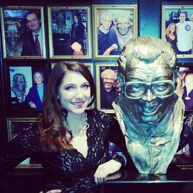

Kristen was born in Frankfurt, Germany before settling in Beaver Dam, WI for her childhood. She attended Northwestern University and studied Industrial Engineering. After college, she worked at Deloitte Consulting and Groupon, Inc. She then returned to the Kellogg School of Management, where she is pursuing a dual-degree with an MBA and a Master in Engineering Management. In her free time, Kristen enjoys cooking, drinking wine with friends, and working out.